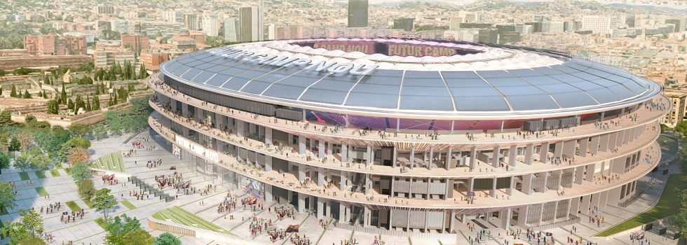

El Club de Fútbol Badalona es un club de fútbol de la ciudad de Badalona (Barcelona), España. Fue fundado en 1903 y juega en la Tercera División RFEF. Desde 2017 juega en el Estadi Municipal de Badalona,2 después de que el Camp del Centenari fuera demolido.
PORTERO: Ter Stegen iñaki Peña
DEFENSA: Joao Cancelo Balde Araujo Kounde
CENTROCAMPISTA: Gavi Pedri De Jong Gundogan
DELANTERO: Ferran Torres Lewandowski Joao Felix
4 CAMPEON DE LA LIGA DE CAMPEONES
1 CAMPEON DE LA COPA DE EUROPA
27 CAMPEON DE ESPAÑA
3 CAMPOEN DEL MUNDIAL DE CLUBES
